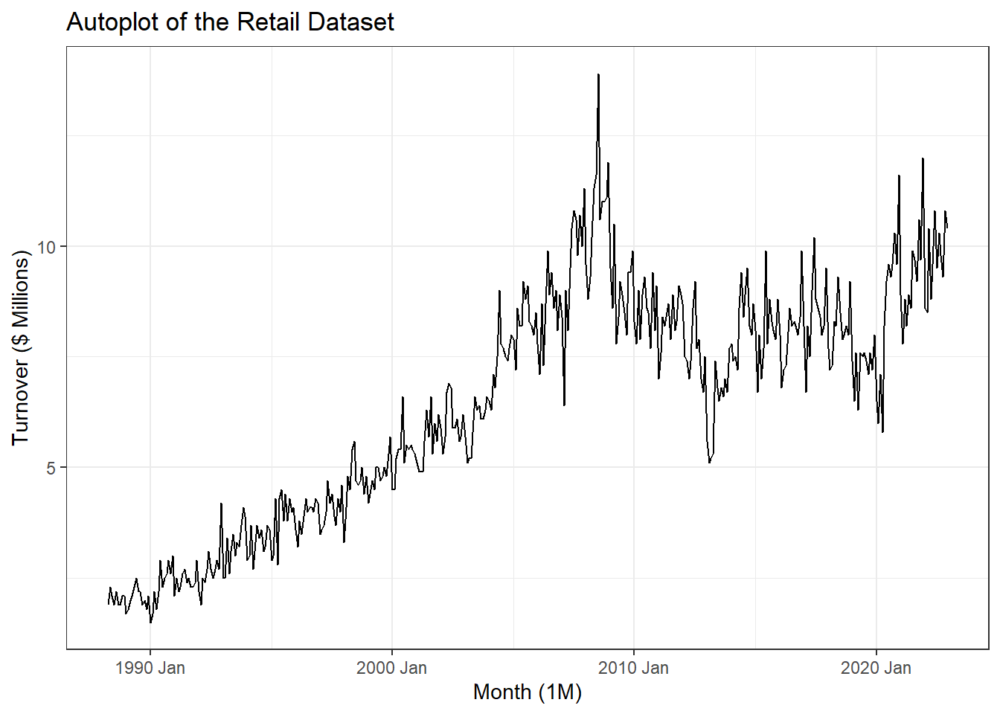
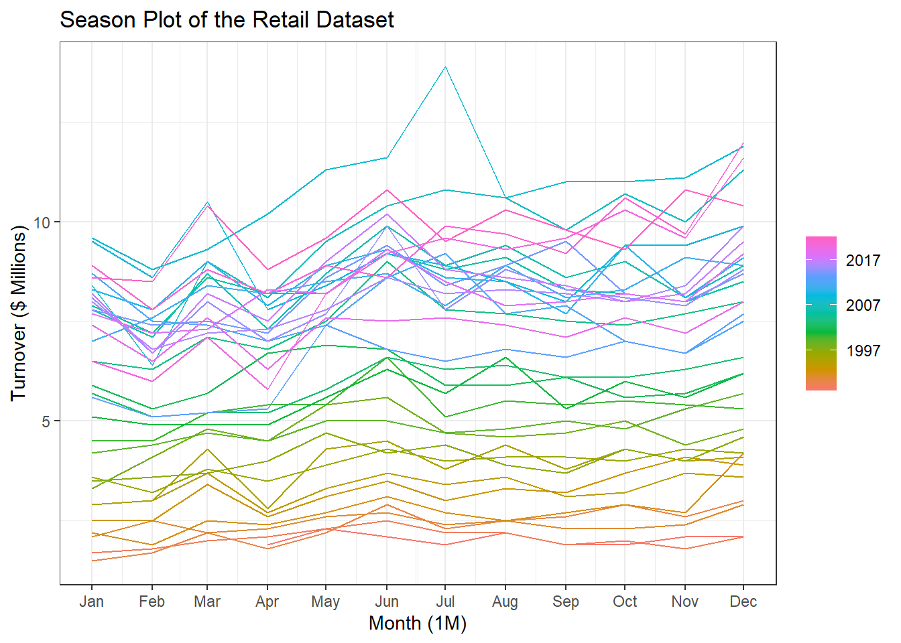
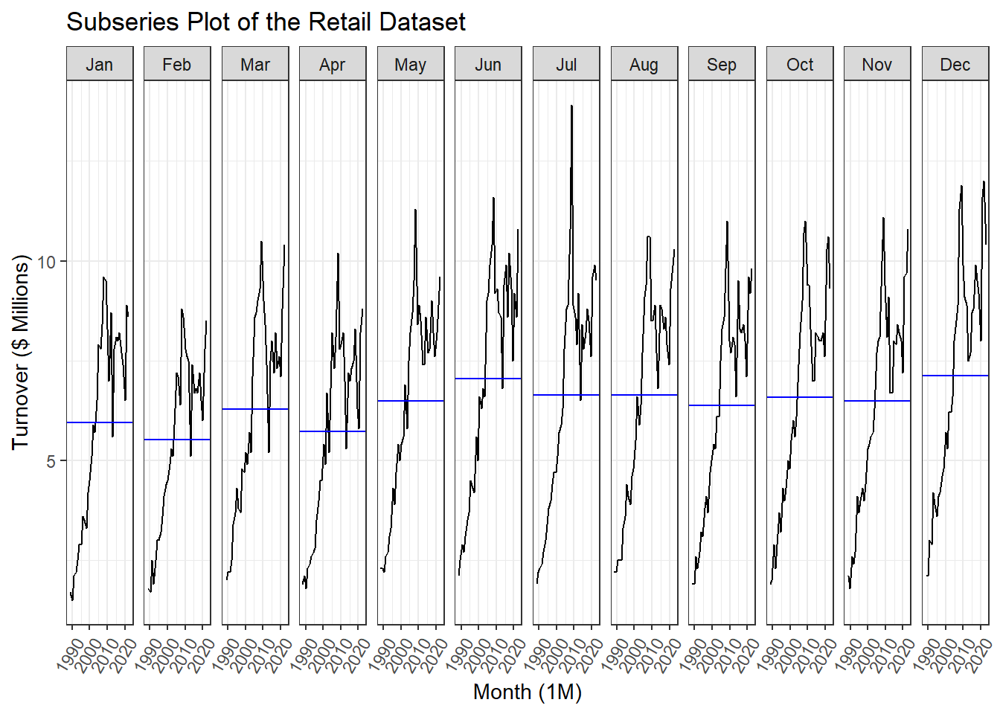

| state | industry | series_id | month | turnover |
|---|---|---|---|---|
| Northern Territory | Furniture, floor coverings, houseware and textile goods retailing | A3349526J | 1988 Apr | 1.9 |
| Northern Territory | Furniture, floor coverings, houseware and textile goods retailing | A3349526J | 1988 May | 2.3 |
| Northern Territory | Furniture, floor coverings, houseware and textile goods retailing | A3349526J | 1988 Jun | 2.1 |
| Northern Territory | Furniture, floor coverings, houseware and textile goods retailing | A3349526J | 1988 Jul | 1.9 |
| Northern Territory | Furniture, floor coverings, houseware and textile goods retailing | A3349526J | 1988 Aug | 2.2 |
| Northern Territory | Furniture, floor coverings, houseware and textile goods retailing | A3349526J | 1988 Sep | 1.9 |
Applied Retail Forecasting
Overview
This project applies classical time series forecasting techniques to Australian retail turnover data, with a focus on furniture and household goods retailing in the Northern Territory of Australia. Using monthly data published by the Australian Bureau of Statistics, the analysis aims to understand the underlying structure of the series and assess how different forecasting approaches perform in practice.
The workflow follows a standard applied forecasting process. The data are first explored to identify trends, seasonality, and structural changes, including the impact of major economic events such as COVID-19. Variance-stabilising transformations and decomposition techniques are then used to better understand the series before fitting and evaluating models.
Two model families are considered: Exponential Smoothing State Space (ETS) models and Seasonal ARIMA models. Model selection is guided by a combination of information criteria, residual diagnostics, and out-of-sample performance using a 24-month test set. Forecast accuracy is further assessed by comparing model predictions to subsequently released ABS data.
The goal of this project is not only to produce forecasts, but to demonstrate a transparent and defensible forecasting workflow, highlighting the trade-offs between model interpretability, stability, and responsiveness when applied to real-world economic data.
Data
This analysis uses monthly retail turnover data from the Australian Bureau of Statistics (ABS), Retail Trade, Table 11.
The series represents turnover for furniture, floor coverings, houseware and textile goods retailing in the Northern Territory of Australia, measured in millions of Australian dollars. The data span April 1988 to December 2022 and are observed at a monthly frequency. A small sample of the dataset is shown below.
Exploratory Data Analaysis (EDA)
Exploratory analysis is used to understand the overall structure of the retail turnover series before any modeling is performed. This includes examining long-term trends, seasonal patterns, and changes in variability over time, as well as identifying potential structural breaks linked to broader economic conditions.
A set of time series visualizations are used to assess these features. These plots help determine whether the series exhibits trend and seasonality, whether variance appears constant over time, and whether there are periods of unusually high or low volatility. Particular attention is given to changes around major events such as the mining boom period and the COVID-19 pandemic, both of which are expected to have influenced retail behaviour in the Northern Territory.
The insights from this exploratory stage inform later decisions around transformation, decomposition, and model selection.
Trend, seasonality, and structural features



The dataset captures monthly retail turnover for furniture, floor coverings, houseware and textile goods retailing in the Northern Territory, spanning April 1988 to December 2022.
The time series plot in Figure 1 shows a clear upward long-term trend, indicating sustained growth in retail turnover over the sample period. Seasonal behaviour is also evident, with fluctuations that increase in magnitude as the level of the series rises, suggesting multiplicative seasonality. A pronounced increase in turnover is observed between approximately 2007 and 2009, which likely reflects the effects of the Northern Territory mining boom during that period. Following this, turnover declines sharply post-2010, potentially linked to the global financial crisis and the subsequent slowdown in mining-related economic activity.
In the years leading up to 2020, turnover appears relatively subdued before rising again during and after the COVID-19 period. While many industries experienced contraction during this time, the increase observed here may reflect shifts in household behaviour, with greater emphasis on home-related spending as lifestyles adjusted. Given the broad scope of this retail category, multiple overlapping factors are likely influencing the observed dynamics.
The seasonal plot in Figure 2 highlights strong and consistent seasonal patterns across years. Turnover tends to peak in June and December, while lower values are commonly observed around February and April. The regular repetition of these patterns supports the presence of true seasonality rather than irregular cyclical effects. Although the exact drivers are not directly observed in the data, these patterns may be associated with factors such as end-of-financial-year spending, holiday periods, and seasonal changes in consumer behaviour.
The subseries plot in Figure 3 further reinforces these findings by displaying monthly behaviour across the full time span. Each month exhibits a distinct seasonal profile, while also reflecting the broader upward movement in turnover over time. June and December consistently record higher average turnover, whereas February and April remain comparatively weaker months. The horizontal reference lines representing monthly means make these differences particularly clear.
One notable feature in the subseries plot is an unusually high turnover value observed in July around 2007. This may represent a genuine economic anomaly linked to exceptional conditions during that period, although the possibility of a data irregularity cannot be ruled out. Overall, the exploratory analysis confirms the presence of trend, seasonality, and changing variance, all of which are important considerations for subsequent transformation and model selection.